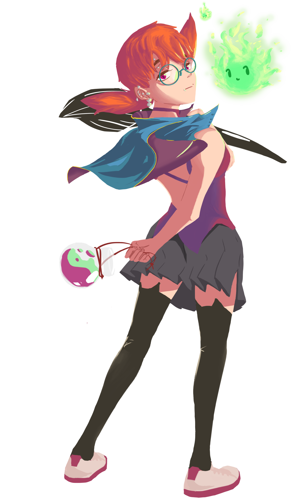

I'm currently undergoing some massive redesigns
The previous site wasn't an expression of what I imagined;
many hours were spent refining that design but in the end
a building on a shaky foundation will never be stable.
The intent is that this next iteration will be
an honest reflection of the things I love,
have made, and have learned.
Hope you come back soon!

- hanoh